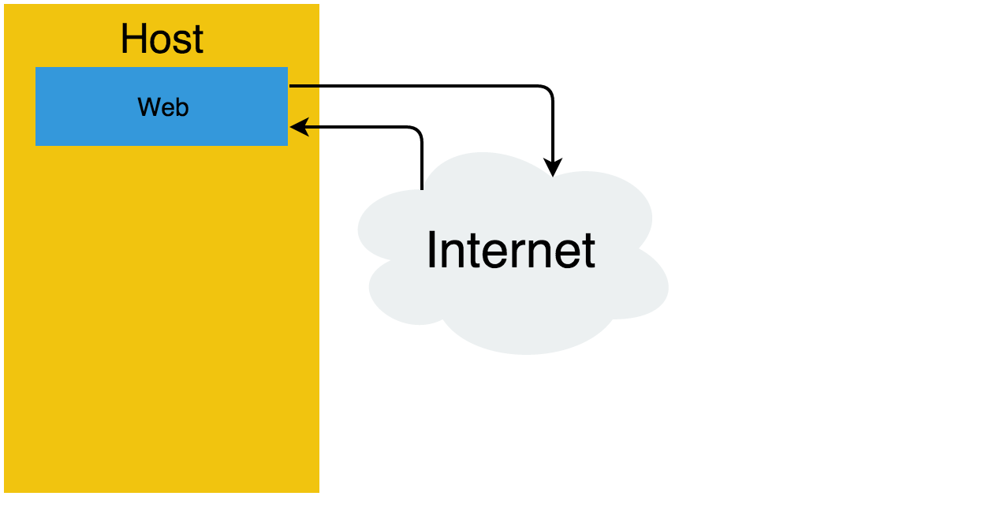
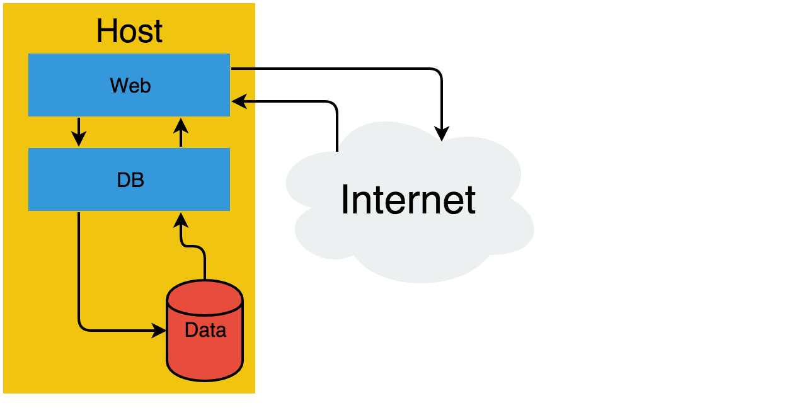
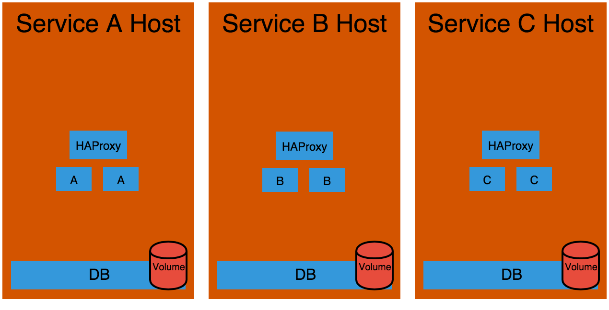
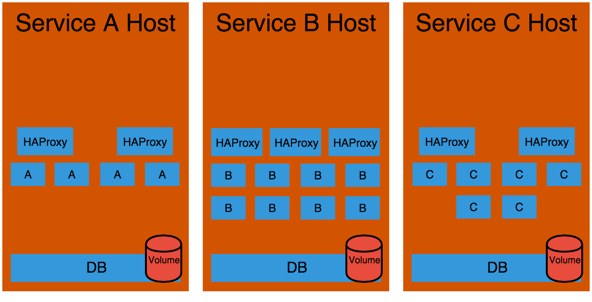
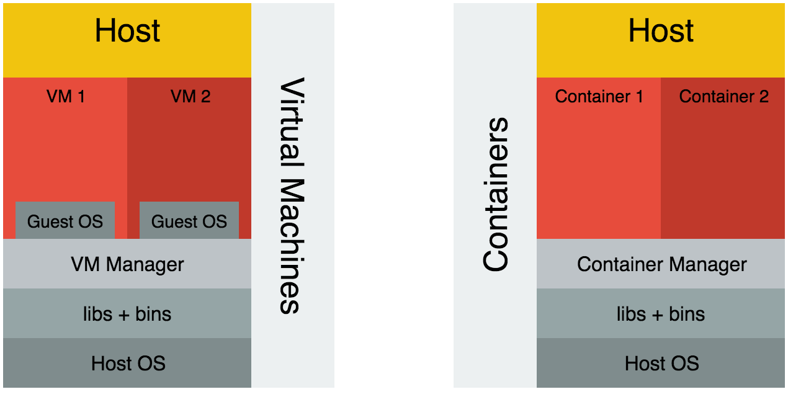
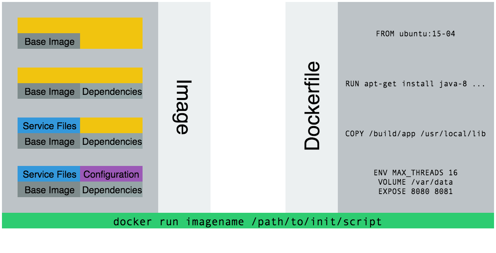
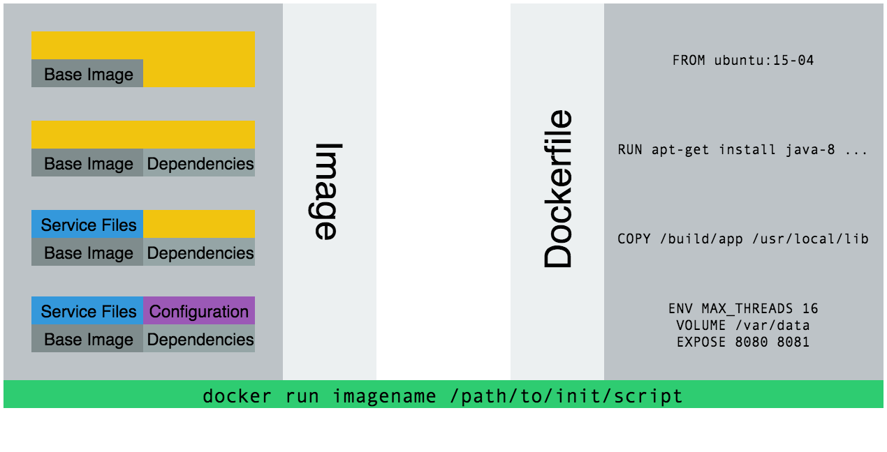
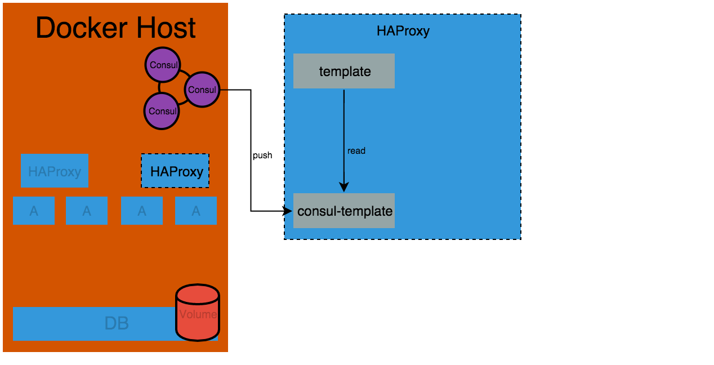

Scaling Docker
A Tiered Approach
Brandon Okert @BrandonOkert
Basic App Without Scaling
 Converting to Docker
"Simple Scaled"
Not Scaled
... but not a monolith
Scaling Webs
Adding Services
 Service Discovery
Large Scale Problems
- Maintenance of hosts
- Resource Utilization
- Localization
How does Mesos Solve these problems?
Our Service on Mesos


Questions?
Docker vs Virtual Machines

Creating Containers
 

Resource Utilization


Consul Template
Mesos